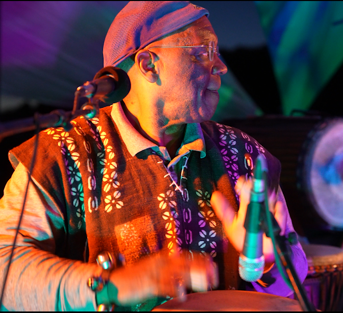

Baba Fred Simpson began drumming as a toddler on his mother’s pots and pans. He received his first conga drum at age 20 and began his professional career accompanying modern dance classes at UC Santa Cruz. From there, his path took him to New York City to work with the NYU School of the Arts, where he studied Congolese music and dance with Titos Sompa. Over the course of his career, he has continuously taught music, built drums, and studied traditions from Congo, Guinea, Senegal, Haiti, and beyond. His life in music has taken him to Africa six times, and he has remained deeply connected to the development of African dance companies in the United States, including the renowned Tanawa, Fua Dia Congo, and Chedo Senegalese Dance Companies. Currently based in Santa Fe, New Mexico, where he has lived for over 20 years, Baba Fred teaches Congolese music informed by a lifelong practice and deep connection to West African percussion from Guinea in the tradition of his teacher and friend, Mamady Keïta.